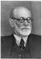
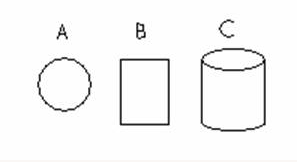
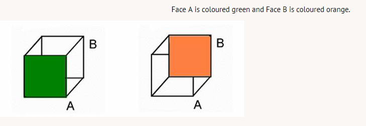

The behavioural perspective studies observable responses of individuals in differing environments. Biology, emotion, desire, and drive are not considered important. A dog that has been observed wagging its tail is not seen as happy or sad or afraid. Emotion is not assumed or considered - only the behaviour.
The biological perspective focuses on how the body and brain work together. Psychologists want to know how hormones, chemicals, and genes interact. They wonder how the body and brain co-ordinate and form memories, emotions, and sensory experiences.
The cognitive perspective reflects upon how the mind processes, stores, and retrieves information. It deals with thinking and knowing as they relate to experience and action.
The psychoanalytic perspective is founded upon the belief that behaviour comes from unconscious desires. Freud was instrumental in the development of this perspective and his theory of the id, ego, and superego (combined with sexual and aggressive drives) links unhappiness and maladaptive behaviour to the effects of unfulfilled wishes and/or childhood trauma.

The humanistic perspective assumes people have power to choose their life patterns and that they can grow and make their own meaning of life.
It rejects both the Freudian view that people are driven by unconscious forces and the behavioural view that a person is merely a collection of responses to environmental stimuli.

If you look down at the top of the shape, as in picture A, it appears simply to be a circular object. If you look at it from the side, as in B, it looks much like a rectangle. What you "see" depends upon your perspective. Two different perspectives can often be complementary. View C is a blend of perspective A and perspective B that forms a more complete three-dimensional object.
Many psychologists blend the best parts of several perspectives and theories to form what they consider to be a complete picture of behaviour. Such psychologists are said to hold an eclectic view of behaviour -- an eclectic view is often most desirable.
Psychologists may also adapt or change their perspectives based on new evidence or new ways of interpreting existing evidence. One need only to look at the Necker Cube to see how a single object can be interpreted in more than one way by an individual.
The Necker Cube is an ambiguous figure in that it can be interpreted either with Face A or Face B closest to an observer. The cube will often appear to change orientation spontaneously as an observer looks at it. Psychologists assume this phenomenon occurs because either interpretation, Face A or Face B, is equally plausible and the observer's perceptual system cannot decide which is the correct interpretation.

As with any science, experimental psychologists use the scientific method to study the behaviour of people (and other animals). The scientific method requires the researcher to develop a hypothesis to state clearly what the researcher believes will be the outcome of an experiment. The scientist's beliefs are related to his or her perspective. Once again, what psychologists believe to be important is related to their outlooks and world views. The scientific method is discussed in detail at the end of this section.
biological perspective: focuses on how the brain is linked to behaviour
cognitive perspective: focuses on how the mind deals with information
psychoanalytic perspective: belief that human behaviour is the result of unconscious desires
humanistic perspective: view of behaviour that assumes people create their own meaning in life
eclectic view: selection of what appears to be best in various doctrines, methods, styles, or views
hypothesis: an educated guess as to the outcome of an experiment
this link opens in a new window/tab)